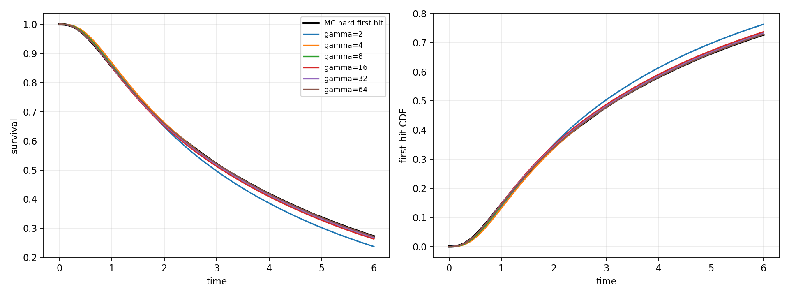
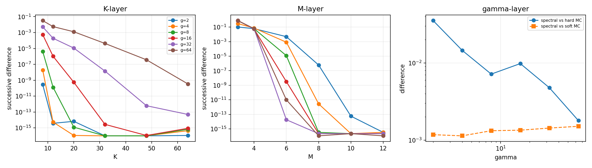
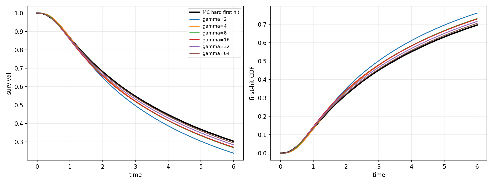
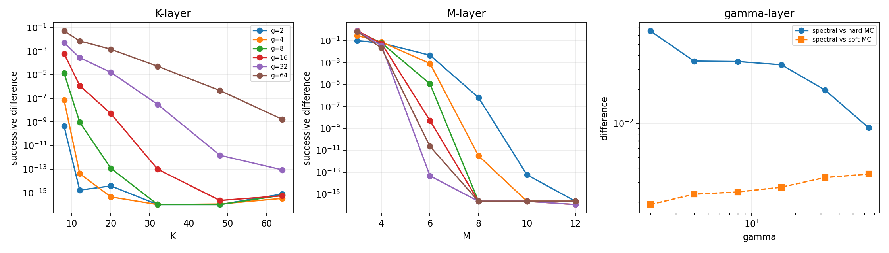
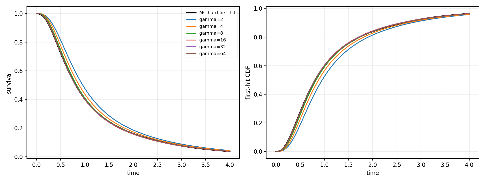
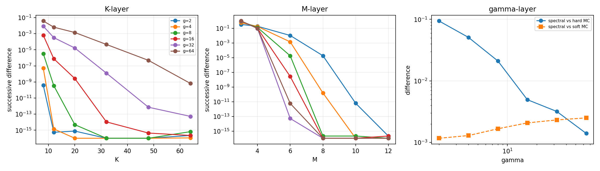

Finite-resolution diagnostics, not a proof of the infinite limit.
| id | label | status | judgement_zh | checks_needed_zh | flags | K_last_step_max | M_last_step_max | ODE_halfstep_max | final_gamma | final_K | final_M | H_T | MC_hard_T | sup_vs_MC_hard | results_folder |
|---|---|---|---|---|---|---|---|---|---|---|---|---|---|---|---|
| P01_baseline | 原参数、平稳初值 | NEEDS_MORE_RESOLUTION_OR_CHECKS | 当前精度不足或仍需检查 | 蒙特卡洛时间步或样本量需检查 | MC_STEP_OR_SAMPLING_UNCERTAINTY | 3.387981e-10 | 3.330669e-16 | 1.019349e-07 | 64.0 | 64 | 12 | 0.271785 | 0.272558 | 0.001788 | D:\Document\Github\First-passage-time-project\Binomial_Moment_Truncation_Approximation_for_First_Passage_Time\Stochastic_Boundary\jacobi_batch_results\P01_baseline__b6bc8c4d50d8 |
| P02_slow_boundary | 较慢的Jacobi边界 | NEEDS_MORE_RESOLUTION_OR_CHECKS | 当前精度不足或仍需检查 | 当前gamma下与首次越界仍不够接近 | SOFT_HARD_NOT_YET_CLOSE | 1.671797e-09 | 2.220446e-16 | 1.005504e-07 | 64.0 | 64 | 12 | 0.294737 | 0.303649 | 0.009129 | D:\Document\Github\First-passage-time-project\Binomial_Moment_Truncation_Approximation_for_First_Passage_Time\Stochastic_Boundary\jacobi_batch_results\P02_slow_boundary__bc54deb0974d |
| P03_fast_reactions | 较快反应 | NUMERICAL_SUPPORT | 本次有限精度下支持逼近 | 无预设标记 | 6.473766e-10 | 2.220446e-16 | 8.476571e-07 | 64.0 | 64 | 12 | 0.037058 | 0.036598 | 0.001398 | D:\Document\Github\First-passage-time-project\Binomial_Moment_Truncation_Approximation_for_First_Passage_Time\Stochastic_Boundary\jacobi_batch_results\P03_fast_reactions__c796c1e6e53a |





